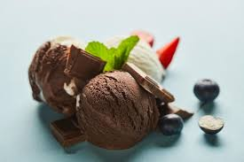
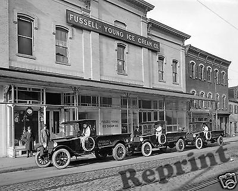

Ancient Beginnings

The first origins of ice cream trace back to ancient civilizations. The Ancient Greeks, for instance, enjoyed a sweet, icy treat made from snow and honey.
The first origins of ice cream trace back to ancient civilizations. The Ancient Greeks, for instance, enjoyed a sweet, icy treat made from snow and honey.

In the 1300s, Marco Polo introduced a version of ice cream to Europe after traveling to Asia, marking the beginning of the spread of this delicious treat across continents.
The first ice cream parlor in America opened in New York in 1776, cementing ice cream as a popular treat in the United States.
The invention of the ice cream churn in the 1800s helped to mass-produce the treat, making it more accessible to the general public.

The iconic waffle cone made its debut at the 1904 World’s Fair, and the ice cream sundae became a beloved dessert in the 1880s.

Today, ice cream continues to evolve with countless flavors and innovations, such as vegan and lactose-free options, as well as premium brands like Häagen-Dazs.
The first ice cream parlor in America opened in New York in 1776, cementing ice cream as a popular treat in the United States.
Once upon a time Ancient Greeks enjoy a dessert similar to ice cream. And this is where our story begins!
Ice cream, ho! Marco Polo brings an early form of ice cream to Europe. We imagine the popular pool game started with ice cream-craving fans searching in the night for Marco! (Polo!)
Ooo, fancy! Ice Cream is introduced to America as a delicacy enjoyed by high society due to its expensive ingredients and lack of available refrigerators.
Open for business! America's first ice cream parlor opens its doors in New York. And you thought lines were bad today...
A labor of love! Now that's what we call mass production. The ice cream churn is invented, and now we can make ice cream by the bucket!
First ice cream plant Doors open to one of the sweetest buildings ever - the very first ice cream plant.

What a scoop Get your fixin's and grab your bowls! The ice cream sundae is born.
Hello Drumstick! Rumor has it, the waffle cone makes its debut at the world's fair in St. Louis, Mo. after an ice cream vendor ran out of bowls. Good thing the waffle maker stepped in to help!
Things got rocky William Dreyer and Joseph Edy create Rocky Road ice cream! It joins vanilla, chocolate and strawberry as most widely available flavors.
Häagen-Dazs William Dreyer and Joseph Edy create Rocky Road ice cream! It joins vanilla, chocolate and strawberry as most widely available flavors.
Start the fireworks July is declared National Ice Cream Month, but you can still enjoy it all year long!
For the love of ice cream 90% of freezers in the USA are chilling ice cream, making it the best selling treat in America next to cookies! Make sure your freezer does, too!